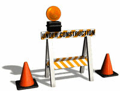

This is where I went to and graduated from architecture school from 2020-2025 and became myself. It was dope and challenging, as college goes. Below is pages of my portfolio, which includes my favorite studio projects from my time there.
Portfolio PDF
This is where I work during the day. It's a small firm that focuses on homes/apartments of varying density all around Boston area. Along with getting a grasp of the architecture and design process, I'm learning a lot of the process for how to ethically achieve denser housing in a city with such complicated housing needs and issues. Below is some examples of stuff I've worked on, measured, designed, drawn details for, or had some hand in.
Thecontextworkshop.com